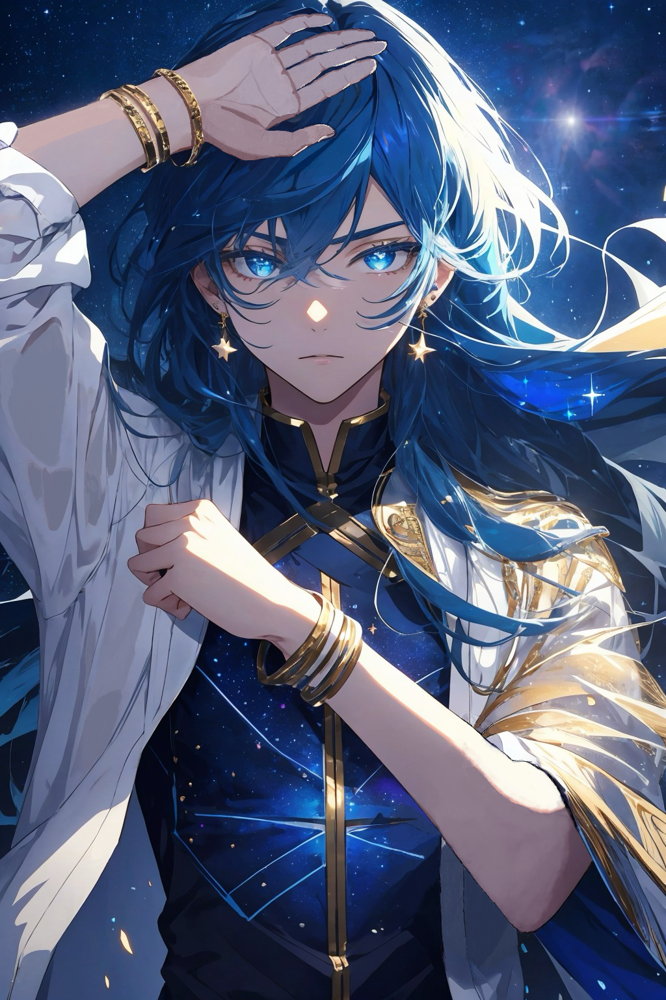

Titles
- Prince of the Cosmos
- Unrivalled within the Dream
- Beloved of the Stars
- Will of the Myriad Multiverses
- Grand Archmage
- Celestial
- The Forgotten Protagonist of the Myriad Multiverses
- Transcendent
- Pseudo-Absolute
On all beings, there is an inherent limit placed upon them. An insurmountable wall that is Absolute Transcendence. It is the sole state of being where you become entirely independent from Deus. The Will of the Myriad Multiverses desired to create and foster such a being.
It amassed enough energy to induce the creation of a multiverse and condensed it into raw talent. On the day Nova was born, the very stars blessed him, vastly boosting his strength in every way possible. As Nova grew older and his body mature, he could handle more and more blessings from the celestial bodies. The stronger he got, the more blessings he was capable of hosting. It created a feedback loop that could last indefinitely.
Nova's life was filled with nothing but fortune, his magic which reflect and manipulate the universe was omnipotent. He encountered a Face of Lunovis and became a traveling companion with him along with several other notable figures. They were namely Cristina the Wanderer, Merkuyues Deviri Intra Lopo the Banished Immortal God of Duality and lastly Leonte Dravidis.
Aside from a few of his traveling group, he was undefeated all the way to Transcendence. That was until he encountered the Pseudo-Absolute Transcendent Spirit King Admon Carter. Although close, he could not bridge the gap that was Pseudo-Authority.
Although he could have very easily lived flamboyantly with no one to stop him, instead Nova decided to become a hermit and truly study all the gifts he had taken for granted.
It did not take long before Nova became infinitesmally close to becoming a fully fledged Absolute.
The plan to nurture the ultimate powerhouse backfired. The Concept of "The Myriad Multiverses" was simply too wide for Nova to master. Due to the karmic connection between the Myriad Multiverses as a whole and Nova, he could not even chose a different Concept to try and master.
Nova became the embodiment of the Myriad Multiverses Will, making him the undefeatable for all those who are not yet Absolute Transcendents, yet at the same time, it limited him from becoming more.
(AI generated concept art + some manual touch up)
